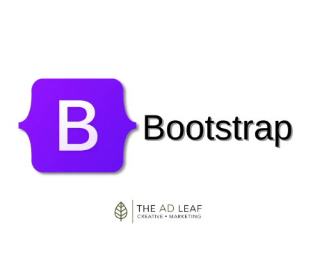

Projetos
📢 Projetos desenvolvidos em aulas, treinamentos e para empresas estão reunidos nesta seção 📢
⚠️CLIQUE NA IMAGEM DO PROJETO PARA ACESSAR O LINK⚠️
Projetos profissionais
◀ Sabores da Lolô
Linguagens utlizadas:

Sabores da Lolô é uma aplicação web desenvolvida para facilitar o agendamento e gestão de pedidos de confeitaria artesanal.
A plataforma permite que clientes escolham produtos como bolos, doces e salgados, definam datas de entrega com antecedência mínima por tipo de item, e finalizem o pedido com validações inteligentes e alertas dinâmicos.
🧑💻 Tecnologias e arquitetura utilizadas:
TypeScript (TS): utilizado em toda a base do projeto para garantir tipagem estática, segurança e escalabilidade no desenvolvimento.
Zod: biblioteca de validação de esquemas usada para validar formulários e dados do cliente, com mensagens de erro traduzidas e personalizadas.
React + Context API: gerenciamento de estado global para carrinho, cliente e pedidos, com sincronização entre componentes e persistência local.
API RESTful: comunicação entre frontend e backend via rotas HTTP (POST, PUT, GET), com envio de dados estruturados em JSON.
Next.js: framework utilizado para renderização otimizada, rotas dinâmicas e integração com API routes.
Fetch API: responsável por enviar e receber dados entre cliente e servidor, com tratamento de erros e feedback ao usuário.
MongoDB: Banco de dados NoSQL utilizado para armazenamento de dados de clientes, carrinho e produtos
Alerta inteligente: sistema de mensagens que informa o usuário sobre erros, confirmações e validações em tempo real.
Controle de carrinho com sincronização persistente: o carrinho é sincronizado com o backend e armazenado localmente, evitando perda de dados durante a navegação.
Aplicativos Mobile
◀ FindWeather
Linguagens utlizadas:
📱 Funcionalidades Principais
🔍 Busca por cidade: campo de pesquisa com ícone de lupa para localizar qualquer cidade.
📍 Localização via GPS: botão com ícone de marcador para obter automaticamente o clima da posição atual.
🌡️ Previsão atual e estendida: mostra temperatura, mínimas e máximas, condições climáticas e ícones ilustrativos.
📅 Previsão de 5 dias: cards com resumo diário (ícone, temperatura, min/max).
⚠️ Mensagens de erro: feedback visual quando a cidade não é encontrada ou há falha na conexão.
🌐 Suporte multilíngue: integração com react-i18next para tradução (ex.: português/inglês).
🎨 Interface responsiva: design adaptado para mobile e web, com ícones e cores intuitivas.
Download: 📦
Clique aqui ou no vídeo para baixar o APK
Instale diretamente no seu dispositivo Android. Ative “Fontes desconhecidas” nas configurações se necessário.
◀ Art Pixels Mobile
Linguagens utlizadas:
Aplicativo interativo para criação de arte em pixel, com paleta de cores otimizada, modos de uso personalizados e interface responsiva. Ideal para crianças e adultos explorarem criatividade com simplicidade.
📱 Funcionalidades:
Paleta de cores clicável
Grade de pixels interativa
Modo Infantil e Modo Tradicional
Botão de limpeza rápida
Mensagem personalizada na tela inicial
Reconhecimento de versão anterior para atualização automática
Download: 📦
Clique aqui ou no vídeo para baixar o APK
Instale diretamente no seu dispositivo Android. Ative “Fontes desconhecidas” nas configurações se necessário.
Projetos de treinamento
◀ App-Inicial
Linguagens utlizadas:
Projeto desenvolvido com o objetivo de demonstrar diferentes abordagens na utilização de Node.js e Tailwind CSS.
Foram aplicadas práticas de estilização com Tailwind para destacar sua agilidade e modularidade em comparação com estilos tradicionais.
Além disso, parte do conteúdo foi estruturado com Next.js, evidenciando sua praticidade na renderização de páginas, roteamento automático e integração com APIs.
O projeto também inclui testes básicos com ESLint, visando garantir padronização e qualidade no código TypeScript.
As imagens utilizadas são provenientes do serviço Unsplash Source, que atualmente requer autenticação para exibição, podendo ocasionar falhas na renderização das imagens.
Algumas seções foram implementadas apenas com HTML, o que pode gerar divergências na responsividade e no comportamento de renderização entre diferentes partes do projeto.
◀ Fundamentos
Linguagens utlizadas:
Este projeto utiliza Node.js como ambiente de execução para o "backend", permitindo a criação de APIs rápidas e escaláveis com JavaScript.
O ESLint foi integrado para garantir a qualidade do código, identificando erros e promovendo boas práticas de desenvolvimento, acusando falhas na excucação e solicitando correções para que o códiga tenha uma ótima resposta na execução.
No "frontend", o Redux desempenha um papel essencial na gestão de estado da aplicação, permitindo que diferentes componentes compartilhem e atualizem dados de forma previsível e organizada, especialmente útil em aplicações com múltiplas interações e atualizações dinâmicas.
Têm mais explicações sobre os modelos na aplicação.
◀ #7DaysOfCode - JS e DOM
Linguagens utlizadas:

Projeto desenvolvido como parte do desafio Alura #7DaysOfCode. Consiste em uma Web app para cadastro de convidados em uma lista de aniversários, exibindo apenas suas respectivas datas. Durante os sete dias, foram aplicados conceitos de DOM e JavaScript para implementar funcionalidades de cadastro, edição, exclusão e limpeza geral dos dados, utilizando o localStorage como servidor local para fins práticos
Foi utilizado conjunto de operações fundamentais CRUD:
CRUD é um acrônimo que representa as quatro operações básicas usadas em sistemas de gerenciamento de dados:
- C – Create (Criar): adicionar novos dados
- R – Read (Ler): consultar ou visualizar dados
- U – Update (Atualizar): modificar dados existentes
- D – Delete (Excluir): remover dados
Essas operações são fundamentais em aplicações que interagem com bancos de dados, como sistemas web, apps e softwares administrativos.
◀ #7DaysOfCode - Lógicas em JS
Linguagens utlizadas:
Projeto desenvolvido como parte do desafio Alura #7DaysOfCode. Consiste em uma Web app que foram inseridos 4 chatBots: Cadastro, Sorteio, Calculadora e Produtos.
Foi utilizado conjunto de operações fundamentais Lógicas de programação.
- Variáveis
- Tipos de dados (string, número, booleano, etc.)
- Operadores (matemáticos e lógicos)
- Estruturas condicionais (if, else, switch)
- Laços de repetição (for, while)
- Funções
- Estruturas de dados (arrays, objetos)
- Manipulação de eventos
- Entrada e saída de dados